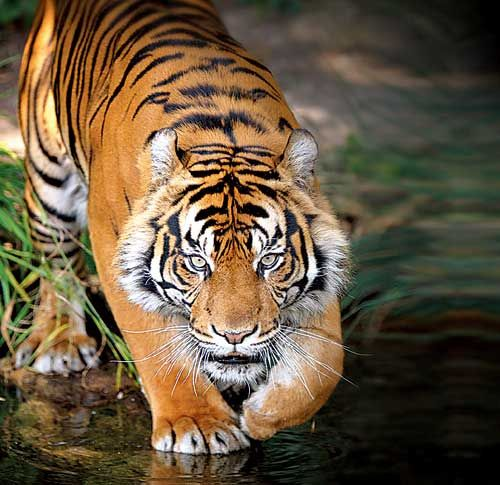

The Royal Bengal Tiger
The magnificent Tiger Pantheratigris (Linnaeus), the national animal of India, is a rich-colored well-striped animal with a short coat.The combination of grace, strength, power has earned the tiger great respect and high esteem.
Tough, muscular, majestic tigers roam about the Sunderbans of Bengal “burning bright in the darkness of the night.”
The natives of the forest worship the tiger as the deity that gives them honey and wax. The Sunderbans are their main habitat for their thick forests of Sunder trees.
They feed on fish, cattle and sometimes human beings. The man-eaters are the most dreaded of all wild beasts.
It is a common belief that a tiger does not harm anyone who has offered prayers to him. Tigers are fast runners, excellent swimmers and their eyesight is strong.
To check the dwindling population of tigers in India, which came down to just 1,827 in 1972, massive conservation program was initiated in April 1973, known as the ‘Project Tiger’.
This project aims to maintain a viable population of tigers in India for scientific, economic, aesthetic, cultural and ecological values.
Since then, the tiger population has shown a gradual increase and the census of 1989 puts the tiger population of the country at 4,334.
So far, 19 tiger reserves have been established in the country under this project, covering over 29, 716 sq. km. forest area.

There could be as few as 3,890 tigers in the wild, most in isolated pockets spread across increasingly fragmented forests, stretching from India to southeastern China and from the Russian Far East to Sumatra, Indonesia. Largest of all cats, the tiger is one of the most threatened species on Earth. Tigers prefer to eat hoofed animals, but will also prey on fish, birds and even other predators like leopards and bears.